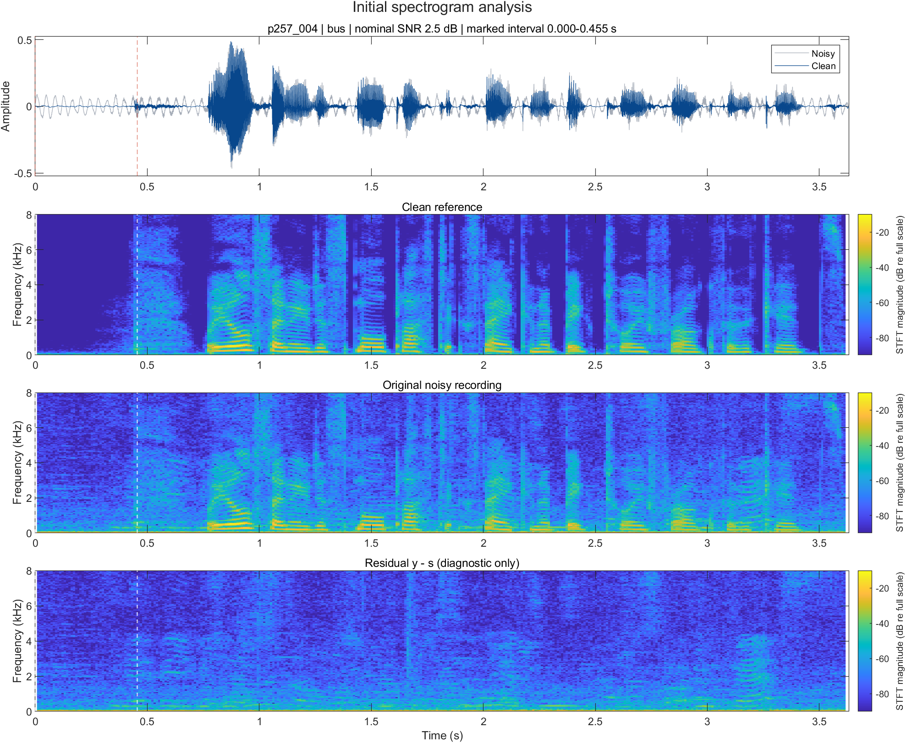
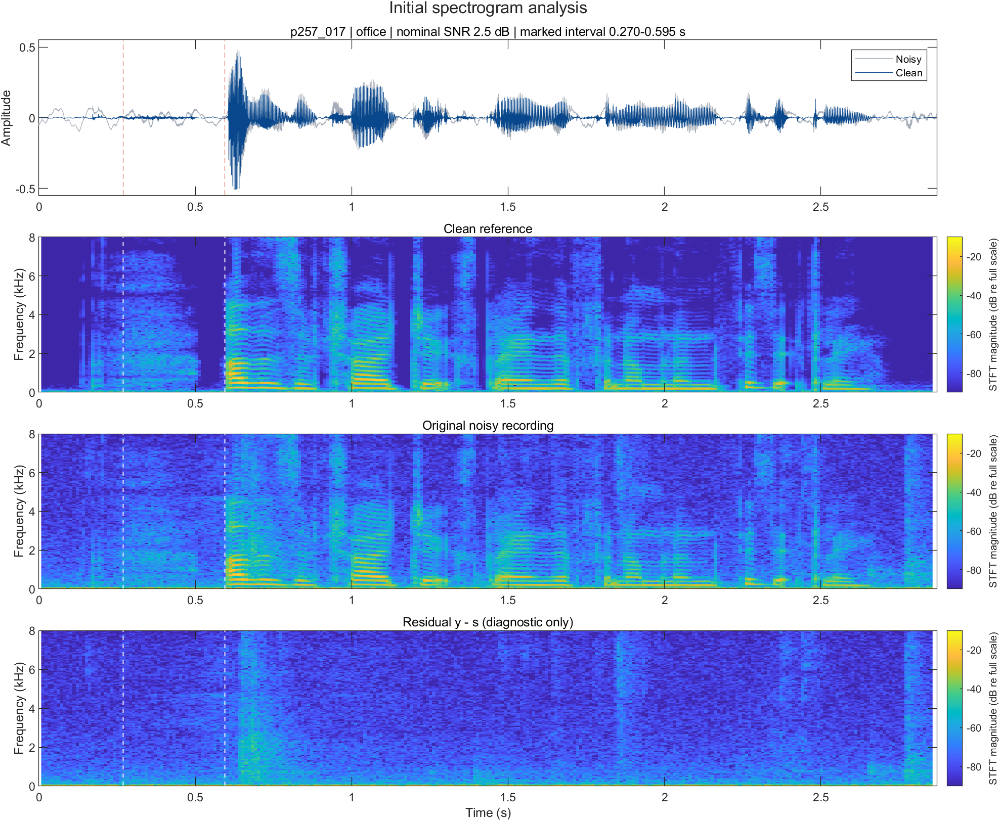
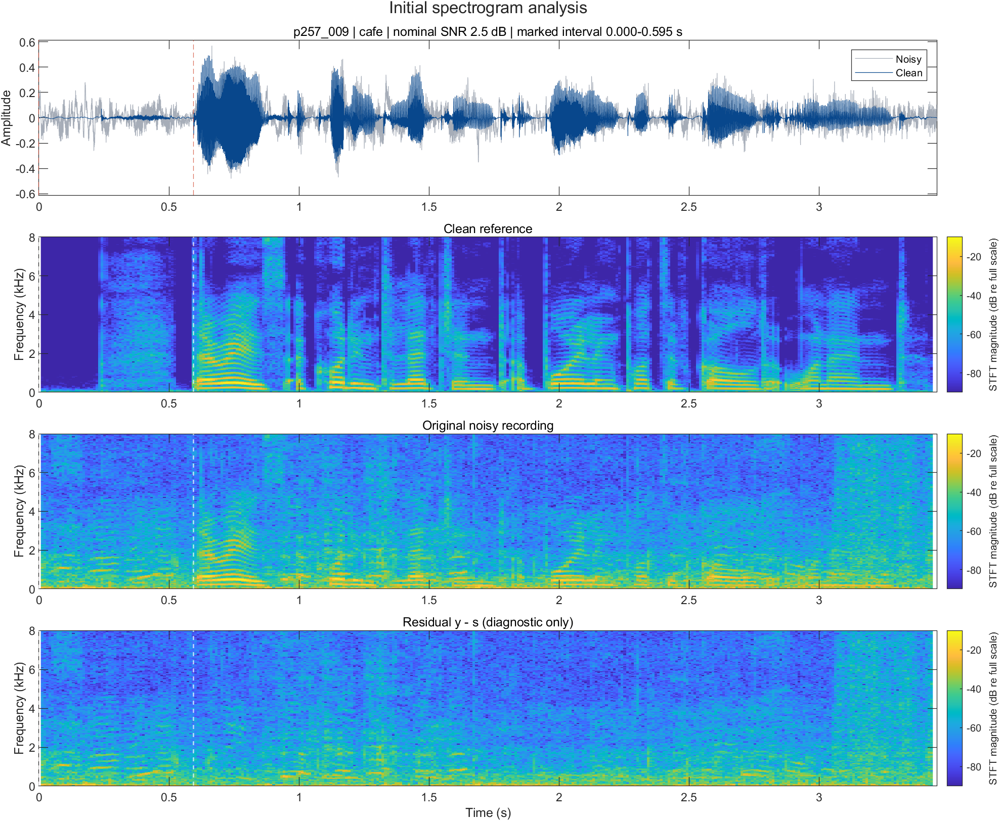

Project Topic Finalized · November 7, 2026
Speech Denoising Using Time–Frequency Filtering
Project Proposal and Initial Analysis
Dayong Fang · Leyu Jiang · Jingyu Liu · Siqi Gong
Download the complete report (PDF, including MATLAB appendix)
Initial data analysis is reported below. Denoising implementation, parameter tuning, and held-out evaluation remain pending. Figures and numerical observations are reproduced from the supplied report; they have not been rerun with its revised script.
1. Selected idea and response to feedback
We select Idea 1: Speech Denoising. Our central question is: How do noise conditions and suppression strength affect the tradeoff between background-noise reduction and speech preservation? The motivation is noisy lecture recordings and online meetings. The main study uses classical DSP on single-channel recordings; reference-based adaptive filtering is a separate extension.
The recommended Noise Cancellation project provides prior work to consider. Our study focuses on speech preservation with classical single-channel methods and condition-balanced clean/noisy speech pairs.
This report addresses the three instructor follow-ups: finalized data and conditions, additional filtering methods, and actual spectrograms identifying mostly noise-dominant regions. No final denoising scores are claimed.
2. Dataset and experimental scope
We use the University of Edinburgh VoiceBank–DEMAND paired speech database. The official recordings are sampled at 48 kHz. Clean/noisy files are matched by basename and converted together to 16 kHz mono with identical antialiasing resampling. The report records 824 test pairs from speakers p232 and p257.
| Partition | Noise labels | Nominal SNR (dB) |
|---|---|---|
| 28-speaker training | babble, cafeteria, car, kitchen, meeting, metro, restaurant, station, traffic, ssn | 0, 5, 10, 15 |
| 2-speaker test | bus, cafe, living, office, psquare | 2.5, 7.5, 12.5, 17.5 |
ssn denotes speech-shaped noise; babble combines multiple speakers. The database study identifies cafe as an open-area cafeteria. Training and test partitions use different speakers and noise conditions.
- Tuning: 400 pairs, selecting 10 pairs for each of 10 training noise labels at four SNR levels (10 × 4 × 10).
- Held-out evaluation: 240 pairs from bus, office, and cafe, with 20 pairs per noise/SNR cell (3 × 4 × 20), equally split between the two test speakers.
- Reproducibility: MATLAB random seed 351; exclude the three illustration recordings below from evaluation. All methods will use the same manifests and alignment rules.
Reported status: training/test audio and condition logs have been obtained, and the original analysis reported a finalized tuning manifest. The revised script adds explicit log-format checks. Manifest files and raw audio are not included in this website update, so these processing steps have not been independently rerun here.
3. Initial waveform and spectrogram analysis
One test recording from each selected noise category was inspected at nominal 2.5 dB SNR. These are exploratory examples, not estimates of average performance. Let s[n] denote clean speech, y[n] the noisy recording, and v[n] = y[n] − s[n] the diagnostic residual. No independent peak normalization or fitted gain precedes subtraction.
The analysis uses a 400-sample periodic Hann window (25 ms), a 160-sample hop (10 ms), and a 512-point FFT at 16 kHz. The FFT-bin spacing is 31.25 Hz; zero-padding refines the display grid, not the intrinsic window resolution. Spectrograms share the 0–8 kHz frequency range and a −90 to −10 dB color range.
To locate mostly noise-dominant regions, each full frame is assigned the clean-speech-to-residual energy ratio:
The longest contiguous run with Rm ≤ −10 dB is marked, including the full frame support. The interval ratios below use the underlying samples without double-counting overlaps. These regions are noise-dominant, not necessarily silent.
| Noise | Recording | Interval (s) | Ratio (dB) | Low-bin share* |
|---|---|---|---|---|
| bus | p257_004 | 0.000–0.455 | −21.48 | 98.7% |
| office | p257_017 | 0.270–0.595 | −17.21 | 99.3% |
| cafe | p257_009 | 0.000–0.595 | −20.79 | 79.9% |
*Original unweighted nonnegative-frequency-bin share below 300 Hz: Σk: fₖ<300,m|V[k,m]|² / Σk≥0,m|V[k,m]|². These are descriptive concentration measures, not Parseval-corrected signal-power fractions or denoising scores. Corrected fractions require rerunning the revised script.
3.1 Bus example

Persistent low-frequency residual energy appears beneath and between speech structures. The marked interval has a speech-to-residual ratio of −21.48 dB, motivating gentle low-frequency attenuation. Energy above 300 Hz and low-frequency clean-speech content mean a high-pass filter cannot be assumed to remove all noise without changing speech.
3.2 Office example

The 0.270–0.595 s interval is dominated by residual energy (−17.21 dB). Its time–frequency patterns do not simply mirror every speech harmonic. We will compare fixed and pause-updated noise estimates rather than treating the office label as proof that its spectrum is constant.
3.3 Cafe example

The marked region has relatively little reference speech (−20.79 dB compared with residual energy). Interference extends over a wider part of the speech band, so a fixed cutoff cannot distinguish the talker from all background. Spectral gains may help, but weak speech and musical-noise artifacts must be checked.
3.4 Cross-condition comparison
The sampled bus and office residuals concentrate strongly in low-frequency bins, while the sampled cafe residual extends more broadly into the speech band. This motivates comparing a modest FIR high-pass baseline with time-varying spectral subtraction and Wiener gains. These are hypotheses from three files, not population-level claims about entire noise categories.
The clean reference and residual are used only for diagnostic plots and reference-based metrics. They will not be used to detect pauses or update a single-channel denoiser. The revised script corrects DC/Nyquist display scaling and adds a corrected one-sided power fraction; the figures shown here are preserved from the original analysis.
4. Denoising methods to implement
Unprocessed and FIR baselines
Keep noisy speech as the unprocessed baseline. Compare identity with 128th-order windowed FIR high-pass candidates at 100, 200, and 300 Hz, optionally adding a 7 kHz upper cutoff. These are candidate cutoffs, not validated optima. Inspect actual responses with freqz: order 128 may give a broad transition relative to 100 Hz at 16 kHz. Compensate for the 64-sample linear-phase group delay and crop all comparisons to a common valid interval.
Power spectral subtraction
Compare α ∈ {1, 2, 4} and β ∈ {0.01, 0.05}. Stronger subtraction may reduce residual noise while erasing weak speech or creating musical noise.
STFT-domain Wiener filtering
Estimate unknown powers from noisy speech alone, apply a small gain floor, and reconstruct with noisy phase and normalized overlap-add. Compare fixed noise estimates with updates during probable pauses.
Practical noise estimation
Use noisy-frame short-time energy Em = (1/L) Σℓ=0L−1 y[mH + ℓ]². As an initial candidate rule, select low-energy frames using a percentile threshold learned on the tuning set, such as the lowest 20%, subject to validation. Average their |Y[k,m]|² values for an initial noise spectrum. During later candidate pauses, update:
Otherwise hold the previous estimate. Tune the forgetting factor and threshold. Low-energy speech may be misidentified as noise, and some recordings may contain no trustworthy pauses. Clean-derived annotations from Section 3 will not be supplied to this detector.
LMS/NLMS adaptive cancellation: separate extension
The main corpus has no independent noise-reference microphone. A controlled simulation will instead use y = s + h ∗ r with a noise-only reference r, independent of target speech, and a known mixing path h.
LMS: wn+1 = wn + μe[n]rn
NLMS: wn+1 = wn + μe[n]rn / (δ + ‖rn‖²)
The reference must correlate with the added noise without containing target speech. This extension receives extra input information, so its scores will be reported separately. Raw DEMAND noise remains optional supplementary data.
5. Evaluation and remaining work
For clean speech s, noisy audio y, and aligned output ŝ, measure all metrics on the same valid samples:
SNRout = 10 log10(Σs² / Σ(ŝ−s)²)
ΔSNR = SNRout − SNRin
Output error includes residual noise and speech distortion. No independent loudness normalization or optimally fitted gain will precede these metrics. Whole-utterance SNR includes pauses, so it need not match nominal active-speech SNR.
Compute STOI and its change relative to the noisy baseline. Use identical files, alignment rules, STFT settings, and valid comparison intervals. Report paired changes for all 12 test noise/SNR cells and separately for p232 and p257; two speakers do not establish broad generalization. Listening at matched playback levels will assess residual noise, muffling, consonant loss, and musical noise. STOI is an intelligibility proxy, not a complete quality measure.
Parameter selection: use the fixed 400-pair tuning manifest and validation within the training partition to choose parameters by mean STOI, with mean ΔSNR secondary and artifact checks on tuning examples. Freeze settings before the 240-pair held-out evaluation.
Instructor deliverable check
| Requested task | Evidence |
|---|---|
| Finalize dataset and conditions | Section 2: source, noise labels, SNRs, 400/240 selection procedure, and excluded illustration files. |
| List additional methods | Section 4: FIR, spectral subtraction, Wiener filtering, noise estimation, and a separate LMS/NLMS extension. |
| Plot spectrograms and identify mostly noise | Section 3: three actual waveform/spectrogram comparisons, marked intervals, ratios, and cross-condition interpretation. |
Denoiser implementation and tuning, processed-audio plots, improvement scores, and listening studies remain future work. The companion website now contains this revised report.